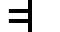
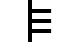
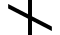
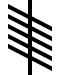

This inscription is translated as "Dovaido son of the Druid." It is located in Ballaqueeney, Port St Mary, Rushen, on the Isle of Man.




Sources:
Ogham inscription: From Wikipedia, the free encyclopedia ᚛ ᚇ ᚜
D
Dair
Meaning: Oak
Word-Oghams (kennings):
From the Bríatharogam Morainn mac Moín:
From the Bríatharogam Maic ind Óc:
From the Bríatharogam Con Culainn:
Unicode: U+1687
Related ogham characters:


Sources:
Ogham: From Wikipedia, the free encyclopedia
A Wikipedia page on the Ogham characters
Bríatharogam: From Wikipedia, the free encyclopedia
A Wikipedia page on the Bríatharogam
Ogham alphabet: From Wikimedia Commons, the free media repository
A Wikimedia Commons gallery of Ogham characters
Ogham (Unicode block): From Wikipedia, the free encyclopedia
A Wikipedia page with details on the Unicode block for the Ogham
characters